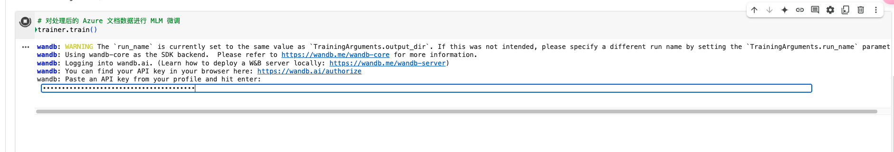
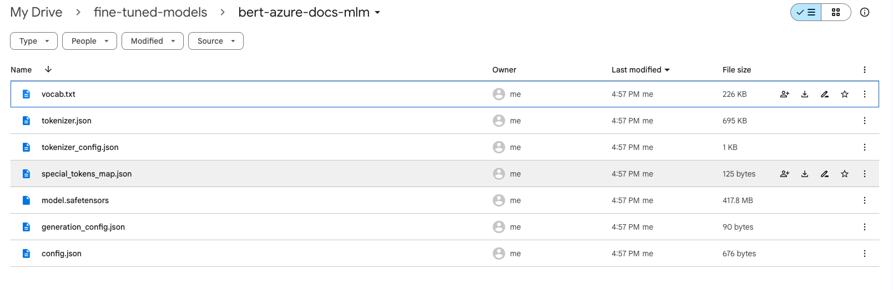

使用MLM微调Bert模型#
下方代码展示了如何使用 Hugging Face Transformers 库对 Bert 模型进行 MLM 微调，并且演示了如何克隆并处理 MicrosoftDocs/azure-docs 仓库中的文档数据作为训练数据。
Google Colab Notebook 地址： 
掩码语言模型（Masked Language Model，MLM）#
微调过程中，输入文本中的 [MASK] 标记通常由微调程序自动生成。具体而言，微调程序会按照预设的策略，对输入文本进行处理，随机选择部分词汇进行掩码操作，以训练模型预测被掩码的词汇。
掩码策略
掩码比例：通常选择输入序列中约15%的词汇进行掩码。
掩码方式：
80% 的情况下，将选定的词替换为
[MASK]标记。10% 的情况下，保持选定的词不变。
10% 的情况下，将选定的词替换为词汇表中的随机词。
这种策略的目的是使模型不仅能够学习到 [MASK] 标记的上下文，还能在面对未被掩码的词或随机替换的词时，增强模型的鲁棒性。在微调过程中，这些掩码操作由程序自动执行，无需人工干预。开发者只需提供原始文本数据，微调程序会根据上述策略自动生成包含 [MASK] 标记的训练数据，以训练模型预测被掩码的词汇。
示例数据#
[
{
"id": "doc1",
"title": "Introduction",
"content": "Java is one of the most used programming languages, according to Stack Overflow and GitHub. Java Virtual Machine (JVM) offers a mature way to run Java applications efficiently. Azure offers various ways to deploy your Java applications. No matter what types of Java applications you're running, Azure has a solution. You can choose from batch processes, nanoservices, and microservices, all the way up to Java Enterprise Edition (EE) and Jakarta EE applications. In this module, we look at Java's powerful features and give an overview of Azure deployment offers. This module is for Java developers and system administrators who have experience with running Java applications. There's no coding involved in this conceptual module. Learning objectives By the end of this module, you'll be able to: Differentiate between types of Java applications. Explain the opportunities for Java developers on Azure. Prerequisites Basic development experience in Java or system operating knowledge for Java-based architectures."
},
{
"id": "doc2",
"title": "Java at Microsoft",
"content": "Developers from around the world learn programming with Java, and it remains one of the most used languages among enterprises. It can help you solve business requirements at all levels. With millions of Java developers worldwide, Java's success speaks for itself. Java is a strategic language of choice on Azure. We support Java developers on multiple levels to deploy their Java applications. No matter what your architecture looks like, Azure has a solution for you; from monolithic applications to microservices or even serverless applications. Microsoft has a high interest in supporting Java and Java on Azure. Did you know that Microsoft is an official contributor to OpenJDK? Microsoft uses Java in many of its products, like LinkedIn, Yammer, Minecraft, and Surface Duo."
}
]
示例代码#
在使用 Hugging Face 的 Transformers 库进行 MLM 训练时，关键在于数据的预处理。这通常DataCollatorForLanguageModeling 来实现，该类负责在训练时对输入数据进行随机掩码操作。
from transformers import DataCollatorForLanguageModeling
data_collator = DataCollatorForLanguageModeling(
tokenizer=tokenizer,
mlm=True, # 启用掩码语言模型
mlm_probability=0.15 # 设置掩码的概率
)
在上述代码中，mlm=True 表示启用掩码语言模型，mlm_probability=0.15 指定了掩码的概率，即随机选择 15% 的词汇进行掩码处理。然后，将此 data_collator 传递给 Trainer，如下所示：
from transformers import Trainer, TrainingArguments
training_args = TrainingArguments(
output_dir="./phi-finetuned",
per_device_train_batch_size=8,
num_train_epochs=3,
save_steps=500,
save_total_limit=2,
)
trainer = Trainer(
model=model,
args=training_args,
data_collator=data_collator, # 传入数据整理器
train_dataset=dataset["train"],
)
这样，Trainer 在训练过程中会自动应用掩码策略。
MLM通过在输入文本中随机掩盖部分词汇，并要求模型根据上下文预测这些被掩盖的词汇来进行训练。在微调阶段，使用特定领域的数据进行训练，模型会学习到该领域的语言特征和用词习惯。这使得模型在处理该领域的文本时，能够更准确地预测词汇，提高生成文本的质量和相关性。因此，MLM微调通过让模型适应特定领域的语言模式，增强了模型在该领域的表现能力。
使用微软文档文本微调Bert (MLM)#
Cell 1: 安装依赖#
!pip install transformers datasets
Cell 2: 克隆 MicrosoftDocs/azure-docs 仓库#
这一步耗时非常长，本次我的耗时约30分钟。为了后续演示方便，随机删去了很多内容，最后只保留了部分文件。
# 克隆仓库
!git clone https://github.com/MicrosoftDocs/azure-docs.git
# 可选：列出部分 Markdown 文件，确认仓库已克隆成功
import glob
md_files = glob.glob("azure-docs/**/*.md", recursive=True)
print(f"共找到 {len(md_files)} 个 Markdown 文件。")
输出结果：
Cloning into 'azure-docs'...
remote: Enumerating objects: 7888510, done.
remote: Counting objects: 100% (3279/3279), done.
remote: Compressing objects: 100% (508/508), done.
remote: Total 7888510 (delta 2924), reused 2986 (delta 2771), pack-reused 7885231 (from 3)
Receiving objects: 100% (7888510/7888510), 24.30 GiB | 30.30 MiB/s, done.
Resolving deltas: 100% (6123467/6123467), done.
Updating files: 100% (56225/56225), done.
Found 17449 markdown files.
Cell 3: 处理 Markdown 文件#
将所有markdown文件拼接列表数据。
# 读取所有 Markdown 文件，并收集文本（可以根据需要添加清洗步骤）
docs_texts = []
for file in md_files:
try:
with open(file, "r", encoding="utf-8") as f:
text = f.read()
# 可选：过滤掉字符数较少的文件，只使用超过200字符的文件
if len(text) > 200:
docs_texts.append(text)
except Exception as e:
print(f"读取 {file} 时出错：{e}")
print(f"从仓库中共收集到 {len(docs_texts)} 个文档。")
从仓库中共收集到 1621 个文档。
Cell 4: 从处理后的数据创建 Hugging Face 数据集#
from datasets import Dataset
# 创建一个包含单个字段 "text" 的数据集
docs_dataset = Dataset.from_dict({"text": docs_texts})
print(docs_dataset)
输出：
Dataset({
features: ['text'],
num_rows: 1621
})
Cell 5: 加载 bert 模型和分词器，并对数据集进行分词#
from transformers import AutoTokenizer, BertForMaskedLM
# Define the checkpoint string
CHECKPOINT = "google-bert/bert-base-uncased"
# Load tokenizer and model from the checkpoint
tokenizer = AutoTokenizer.from_pretrained(CHECKPOINT, trust_remote_code=True)
model = BertForMaskedLM.from_pretrained(CHECKPOINT, trust_remote_code=True)
# Define the tokenization function (adjust max_length as needed)
def tokenize_function(examples):
return tokenizer(examples["text"], truncation=True, max_length=128)
# Assuming docs_dataset is already defined, map the tokenization function
tokenized_docs = docs_dataset.map(tokenize_function, batched=True, remove_columns=["text"])
输出：
/usr/local/lib/python3.11/dist-packages/huggingface_hub/utils/_auth.py:94: UserWarning:
The secret `HF_TOKEN` does not exist in your Colab secrets.
To authenticate with the Hugging Face Hub, create a token in your settings tab (https://huggingface.co/settings/tokens), set it as secret in your Google Colab and restart your session.
You will be able to reuse this secret in all of your notebooks.
Please note that authentication is recommended but still optional to access public models or datasets.
warnings.warn(
tokenizer_config.json: 100%
48.0/48.0 [00:00<00:00, 5.35kB/s]
config.json: 100%
570/570 [00:00<00:00, 63.4kB/s]
vocab.txt: 100%
232k/232k [00:00<00:00, 6.17MB/s]
tokenizer.json: 100%
466k/466k [00:00<00:00, 10.4MB/s]
The argument `trust_remote_code` is to be used with Auto classes. It has no effect here and is ignored.
model.safetensors: 100%
440M/440M [00:02<00:00, 184MB/s]
BertForMaskedLM has generative capabilities, as `prepare_inputs_for_generation` is explicitly overwritten. However, it doesn't directly inherit from `GenerationMixin`. From 👉v4.50👈 onwards, `PreTrainedModel` will NOT inherit from `GenerationMixin`, and this model will lose the ability to call `generate` and other related functions.
- If you're using `trust_remote_code=True`, you can get rid of this warning by loading the model with an auto class. See https://huggingface.co/docs/transformers/en/model_doc/auto#auto-classes
- If you are the owner of the model architecture code, please modify your model class such that it inherits from `GenerationMixin` (after `PreTrainedModel`, otherwise you'll get an exception).
- If you are not the owner of the model architecture class, please contact the model code owner to update it.
Some weights of the model checkpoint at google-bert/bert-base-uncased were not used when initializing BertForMaskedLM: ['bert.pooler.dense.bias', 'bert.pooler.dense.weight', 'cls.seq_relationship.bias', 'cls.seq_relationship.weight']
- This IS expected if you are initializing BertForMaskedLM from the checkpoint of a model trained on another task or with another architecture (e.g. initializing a BertForSequenceClassification model from a BertForPreTraining model).
- This IS NOT expected if you are initializing BertForMaskedLM from the checkpoint of a model that you expect to be exactly identical (initializing a BertForSequenceClassification model from a BertForSequenceClassification model).
Map: 100%
1621/1621 [00:02<00:00, 587.88 examples/s]
Cell 6: 准备用于 MLM 的数据收集器#
from transformers import DataCollatorForLanguageModeling
# 创建 MLM 数据收集器，设置 15% 的 mask 概率
data_collator = DataCollatorForLanguageModeling(tokenizer=tokenizer, mlm_probability=0.15)
Cell 7: 设置训练参数并初始化 Trainer#
from transformers import Trainer, TrainingArguments
training_args = TrainingArguments(
output_dir="./bert-azure-docs-mlm", # 输出目录
overwrite_output_dir=True,
evaluation_strategy="no", # 如需定期评估，可改为 "steps"
num_train_epochs=3, # 根据需要调整训练轮次
per_device_train_batch_size=16, # 根据 GPU 容量调整 batch size
save_steps=500, # 每500步保存一次模型
save_total_limit=2, # 最多保存最近2个 checkpoint
)
trainer = Trainer(
model=model,
args=training_args,
data_collator=data_collator,
train_dataset=tokenized_docs,
)
Cell 8: 使用 MLM 目标对模型进行微调#
# 对处理后的 Azure 文档数据进行 MLM 微调
trainer.train()
需要wandb.ai的key

输出：
wandb: WARNING The `run_name` is currently set to the same value as `TrainingArguments.output_dir`. If this was not intended, please specify a different run name by setting the `TrainingArguments.run_name` parameter.
wandb: Using wandb-core as the SDK backend. Please refer to https://wandb.me/wandb-core for more information.
wandb: Logging into wandb.ai. (Learn how to deploy a W&B server locally: https://wandb.me/wandb-server)
wandb: You can find your API key in your browser here: https://wandb.ai/authorize
wandb: Paste an API key from your profile and hit enter: ··········
wandb: WARNING If you're specifying your api key in code, ensure this code is not shared publicly.
wandb: WARNING Consider setting the WANDB_API_KEY environment variable, or running `wandb login` from the command line.
wandb: No netrc file found, creating one.
wandb: Appending key for api.wandb.ai to your netrc file: /root/.netrc
wandb: Currently logged in as: galty687 (galty687-peking-university) to https://api.wandb.ai. Use `wandb login --relogin` to force relogin
Tracking run with wandb version 0.19.8
Run data is saved locally in /content/wandb/run-20250319_085505-fwlzb07r
Syncing run ./phi4-azure-docs-mlm to Weights & Biases (docs)
View project at https://wandb.ai/galty687-peking-university/huggingface
View run at https://wandb.ai/galty687-peking-university/huggingface/runs/fwlzb07r
[306/306 00:35, Epoch 3/3]
Step Training Loss
TrainOutput(global_step=306, training_loss=1.0518618315653083, metrics={'train_runtime': 61.0276, 'train_samples_per_second': 79.685, 'train_steps_per_second': 5.014, 'total_flos': 319991251161600.0, 'train_loss': 1.0518618315653083, 'epoch': 3.0})
Cell 9: 保存微调后的模型和分词器#
from google.colab import drive
import os
# 挂载 Google Drive
drive.mount('/content/drive')
# 定义保存模型和分词器的目标文件夹路径（fine-tuned-models 文件夹中）
dest_folder = '/content/drive/MyDrive/fine-tuned-models/bert-azure-docs-mlm'
os.makedirs(dest_folder, exist_ok=True)
# 保存微调后的模型和分词器到目标路径
model.save_pretrained(dest_folder)
tokenizer.save_pretrained(dest_folder)
print(f"模型和分词器已保存到 {dest_folder} 文件夹中。")
输出：
Drive already mounted at /content/drive; to attempt to forcibly remount, call drive.mount("/content/drive", force_remount=True).
模型和分词器已保存到 /content/drive/MyDrive/fine-tuned-models/bert-azure-docs-mlm 文件夹中。

以上代码分为多个单元格，你可以在 Google Colab 中依次运行。你可以根据实际数据和 GPU 资源，调整 max_length、num_train_epochs、batch size 等参数。此流程先利用 MLM 目标微调模型，再后续可以根据需要用带有不同风格的 SFT 数据进一步进行微调。
实验过程中，有时候因为各种原因会重启session，可以讲微调数据存入Google Drive，节约重复下载的时间。
准备数据#
将所有markdown文件读取后，拼接为一个单独的 docs_texts列表。
from google.colab import drive
import os, glob
# 挂载 Google Drive
drive.mount('/content/drive')
# 定义目标文件夹路径
dest_folder = '/content/drive/MyDrive/pure-md-files'
# 使用 glob 获取目标文件夹中所有 Markdown 文件（根目录下的）
md_files = glob.glob(os.path.join(dest_folder, '*.md'))
docs_texts = []
for file in md_files:
try:
with open(file, "r", encoding="utf-8") as f:
text = f.read()
# 过滤掉字符数较少的文件，只使用超过200字符的文件
if len(text) > 200:
docs_texts.append(text)
except Exception as e:
print(f"读取 {file} 时出错：{e}")
print(f"从仓库中共收集到 {len(docs_texts)} 个文档。")
将数据转为json存入Google Drive#
import os
import json
# 定义目标文件夹路径（已挂载到 Google Drive）
dest_folder = '/content/drive/MyDrive/pure-md-files'
# 构造保存文件的完整路径
save_path = os.path.join(dest_folder, 'docs_texts.json')
# 保存 docs_texts 到目标路径中的 JSON 文件
with open(save_path, 'w', encoding='utf-8') as f:
json.dump(docs_texts, f, ensure_ascii=False, indent=2)
print(f"docs_texts 已保存到 {save_path} 文件。")
从目标路径中的 JSON 文件中加载 docs_texts#
from google.colab import drive
import os
import json
# 挂载 Google Drive
drive.mount('/content/drive')
# 定义目标文件夹路径（已挂载到 Google Drive）
dest_folder = '/content/drive/MyDrive/pure-md-files'
# 构造文件的完整路径
load_path = os.path.join(dest_folder, 'docs_texts.json')
# 从目标路径中的 JSON 文件中加载 docs_texts
with open(load_path, 'r', encoding='utf-8') as f:
docs_texts = json.load(f)
print(f"docs_texts 已从 {load_path} 文件中加载。")
下一句预测（NSP）#
对于 NSP 任务，需要在数据预处理阶段构造句子对，并为每对句子指定标签（即第二个句子是否为第一个句子的后续句）。这通常需要自定义数据集，并在模型定义时选择支持 NSP 任务的模型架构，例如 BertForPreTraining。以下是一个简要的示例：
from transformers import BertForPreTraining, Trainer, TrainingArguments
model = BertForPreTraining.from_pretrained("bert-base-uncased")
training_args = TrainingArguments(
output_dir="./bert-finetuned",
per_device_train_batch_size=8,
num_train_epochs=3,
save_steps=500,
save_total_limit=2,
)
trainer = Trainer(
model=model,
args=training_args,
train_dataset=custom_nsp_dataset, # 自定义的 NSP 数据集
)
在此示例中，custom_nsp_dataset 是一个包含句子对和对应标签的数据集，BertForPreTraining 模型同时支持 MLM 和 NSP 任务。